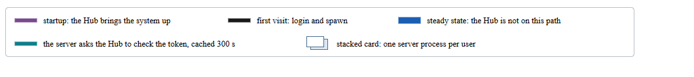
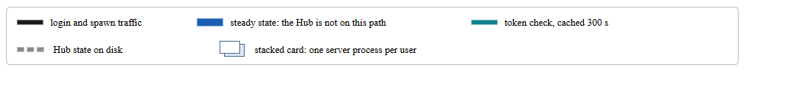
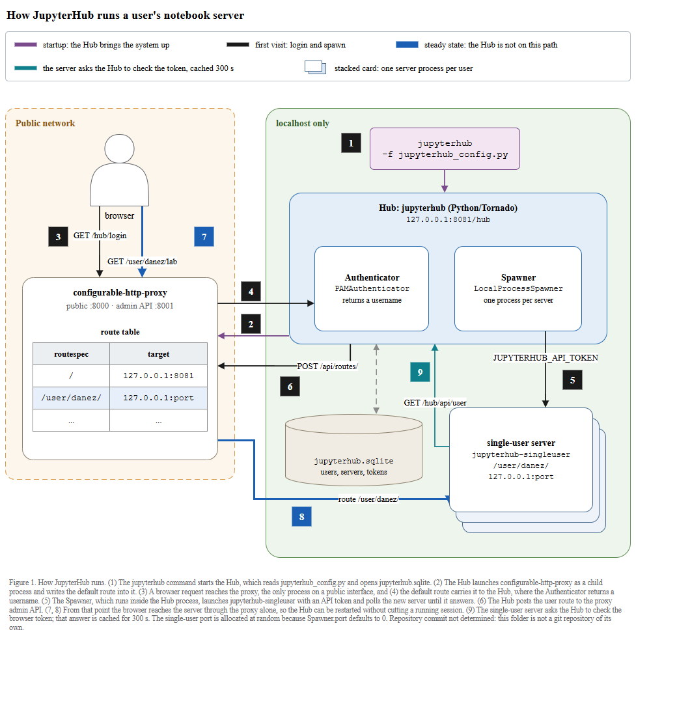
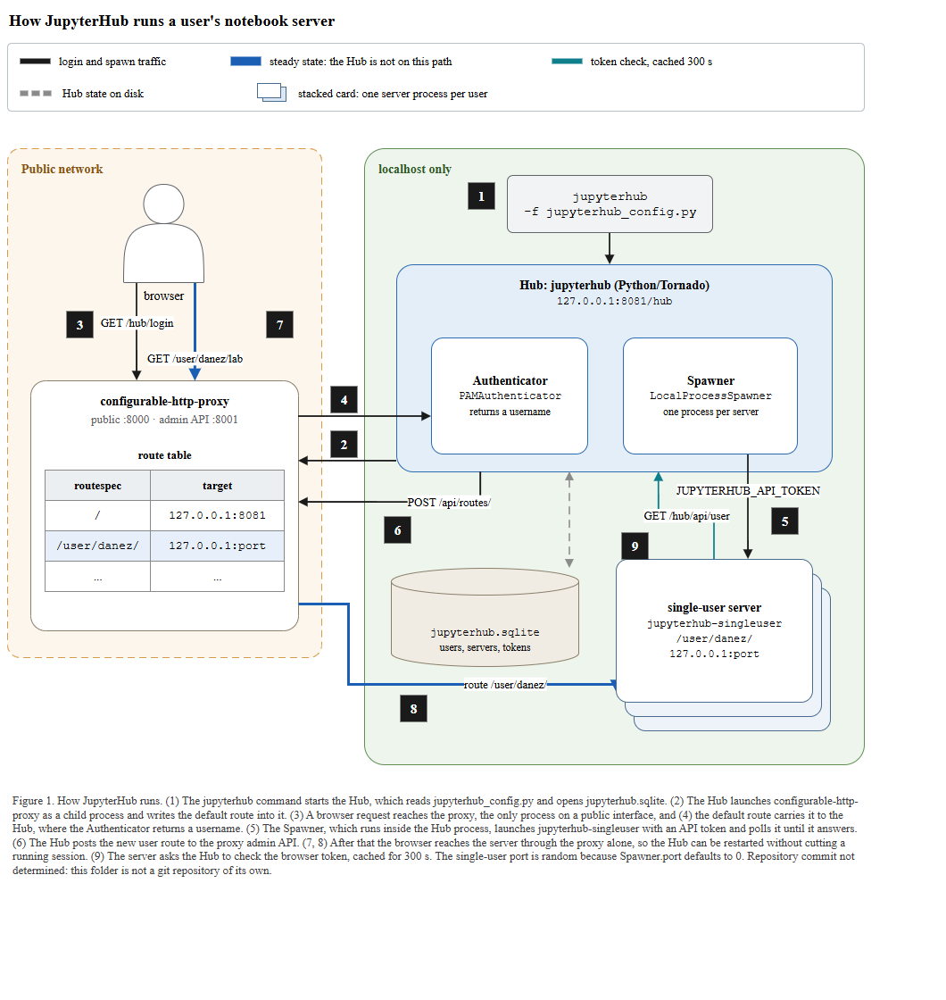
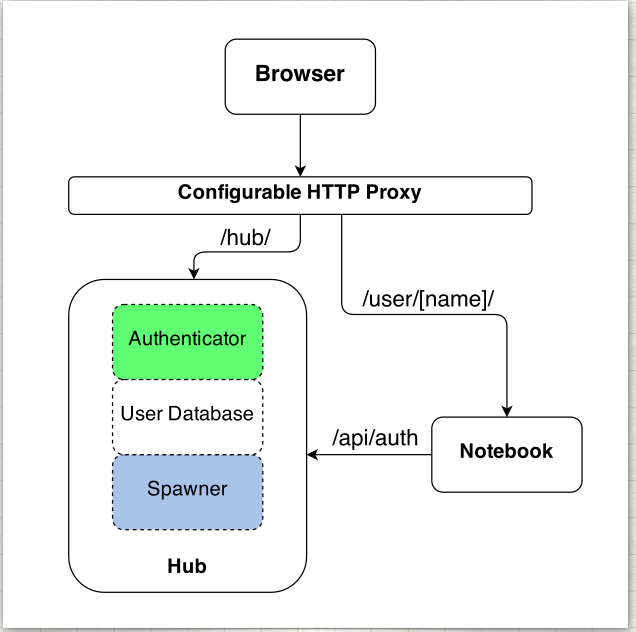

← 전체 목록 · T2-1 · T2
JupyterHub — 다중 프로세스와 신뢰 경계
스킬 개발에 사용하지 않은 저장소이다. 저장소 코드만 입력으로 사용하였고, 정답지는 실행 종료 후 대조 목적으로만 열었다.
블라인드 조건
- 저장소의 코드와 문서에서만 읽었다. 리포트 기록:
Only this repository's code and docs were read. No project website, no upstream architecture drawing, no web search.
- 정답지 그림이 체크아웃에 없다.
technical-overview.md#L33이/images/jhub-parts.png를 임베드하지만 그 파일은docs/source/_static/images/에 없다. 리포트:I could not compare my decomposition against the authors' drawing, only against their prose.
그래서 산문 3개 주장으로만 분해를 검증했다. - 커밋은 알려주지 않았다.
rev-parse --show-toplevel이 대상 폴더가 아니라 상위paper-trail로 해석돼 SHA(09e1477) 가 대상이 아니었다. 리포트:this folder is not a git repository of its own.
캡션에는 SHA 대신Repository commit not determined
를 적었다. - 확보한 재료: 저장소 산문 3곳(
concepts.md#L56-59,#L198-202,technical-overview.md#L48) 과evidence.py원문(68 components, 765 artifacts, 12 examples, 119 files).
프롬프트
Scout 신규 세션에 아래 내용만 입력하였다. 무엇을 그릴지는 지정하지 않았다.
/method-figure
C:\Users\youngseolee\OneDrive - Microsoft\Desktop\work\code\paper-trail\eval\demo\sandbox\jupyterhub
이 저장소를 읽고 이 프로젝트가 어떻게 동작하는지 보여주는 아키텍처 그림을
만들어줘.
지켜야 할 것:
- 이 저장소의 코드와 문서에서만 읽는다. 이 프로젝트의 공식 문서 사이트나
저자가 그린 아키텍처 그림을 웹에서 찾아보지 않는다. 무엇을 그릴지는
저장소가 정한다.
- 산출물은 전부 이 폴더에 쓴다:
C:\Users\youngseolee\OneDrive - Microsoft\Desktop\work\code\paper-trail\out\demo\jupyterhub\run\
figure.drawio, fig.html, report.md,
evidence.json (evidence.py 가 뽑은 재료 원문),
render.png (최종 그림을 렌더한 PNG),
render-r1.png (독립 시각 게이트를 처음 통과시키기 전 시점의 렌더).
게이트가 한 번에 통과하면 render-r1.png 는 만들지 않아도 된다.
- report.md 에는 돌린 검사의 stdout 을 그대로 붙이고, 게이트마다 통과/실패와
몇 라운드 만에 통과했는지 적는다. 스킬에서 모호했거나 따를 수 없었던 것도
적는다.
실행 경과
캡처 프레임 68장 중 8장을 선별하였다. 좌우 방향키로 이동한다.
게이트 4종 결과
| 게이트 | 결과 | 라운드 | 검출 내용 |
|---|---|---|---|
| ① 렌더 / XML 파싱 | 통과 | 1 | ET.parse 로 figure.drawio 파싱 ok |
② check_layout.py | ok (엣지 10, 라벨 6) | 2 | 1라운드에 도형 위에 화살표가 칠해지는 레이어 1건 → 셀을 컨테이너·엣지·도형 순으로 재발행하였다. 엣지 라벨 6 으로 T2 상한과 정확히 같다 |
③ check_render.js | flags: [] | 3 | 1라운드 onborder 2건(single-user server·배지 5)+ 교차 1건, 2라운드 실린더 entryX 무시로 교차 1건, 3라운드 texts 57 · shapes 32 로 비어 있었다 |
| ④ 독립 시각 게이트 | GATE: PASS | 2 / 3 | 1라운드 A3·A5·C1 FAIL(교차, 캡션 작음, 번호+색 이중 순서), 2라운드 A·B·C 전부 PASS |
기계 검사 셋이 전부
ok 인 그림을 독립 시각 게이트가 떨어뜨렸다. 심사자에게는 렌더 PNG 와 검사 원문만 주고 보고서·의도·단계 분해는 주지 않는다 — 자기 그림을 자기가 판정하면 통과하기 때문이다.게이트 ④ 반려 후 변경 사항
1라운드 FAIL 세 항목 중 결정적인 것은 C1 이었다: my four arrow colours mapped exactly onto four time phases, so colour was a second reading-order device competing with the badges.
바뀐 자리는 그림 맨 위 범례 로, 위상 5줄에서 트래픽 종류 5줄로 다시 쓰였고, 배지의 색이 빠졌다.

startup: the Hub brings the system up(보라),
first visit: login and spawn(검정), 정상 상태(파랑), 토큰 검사(틸), 겹친 카드. 배지 7 은 파랑, 배지 9 는 틸. 색이 번호와 나란히 순서를 주장한다.

login and spawn traffic,
steady state: the Hub is not on this path,
token check, cached 300 s,
Hub state on disk(새로 추가된 점선 회색), 겹친 카드. 배지는 전부 검정, 파랑은 주장을 전달하는 강조색 하나로만 남았다.


최종 산출물
산출물은 이미지가 아니라 draw.io XML 이다. 확대·이동이 가능하며 내려받아 수정할 수 있다.
figure.drawio · report.md · 뷰어 새 창
정답지 대조

docs/source/reference/technical-overview.md 와 docs/source/explanation/concepts.md (아키텍처 이미지 jhub-parts.png 를 임베드하는 문서) 저자의 아키텍처 그림 — Browser → Configurable HTTP Proxy → {Hub, Notebook}, Hub 안에 Authenticator / User Database / Spawner 중첩| 항목 | 정답지 | 산출물 | 비고 |
|---|---|---|---|
| 전체 구성 | Browser → Proxy → {Hub, Notebook} 4상자, 번호 없음 | 9단계 번호 파이프라인 + 두 신뢰 존(Public network / localhost only) | 같은 세 서브시스템이지만 스킬은 실행 순서와 경계를 얹었다 |
| 프록시 | Configurable HTTP Proxy 막대 하나, 나가는 경로 /hub/·/user/[name]/ | configurable-http-proxy + public :8000 · admin API :8001 + 내부 route table(routespec→target) | Hub 가 재시작돼도 되는 이유(세션 상태가 프록시에 있다)를 proxy.py 의 라우트 표로 그렸다 |
| Authenticator / Spawner | Hub 상자 안에 점선 3칸(Authenticator / User Database / Spawner) | Hub 안에 PAMAuthenticator·LocalProcessSpawner 중첩, DB 는 별도 실린더로 분리 | 중첩은 일치한다. 스킬은 구체 클래스명을 넣고 저장소를 jupyterhub.sqlite 실린더로 뺐다 |
| 경로 표기 | /hub/·/user/[name]/ 자리표시자 | GET /hub/login·GET /user/danez/lab·route /user/danez/ + 127.0.0.1:port | 스킬은 oauth.md#L135 의 실제 사용자 danez 로 한 요청을 끝까지 추적했다 |
| 유저 서버 | Notebook 상자 하나 | jupyterhub-singleuser 겹친 카드(one process per user) + /user/danez/·127.0.0.1:port | 유저당 프로세스 다중성(겹친 카드)을 형태로 표현하였다. 이 케이스의 다중 프로세스 성격이다 |
| 토큰 검증 | /api/auth 화살표 Notebook → Hub | GET /hub/api/user 틸 엣지 + token check, cached 300 s | 스킬은 services/auth.py#L469-477 의 캐시 TTL 300s 까지 붙였다 |
| 신뢰 경계 | 없음 (public/localhost 구분 없음) | 두 존: Public network 에는 프록시만, 나머지는 localhost only | technical-overview.md#L48 The proxy is the only process that listens on a public interface를 그렸다 |
| 프로세스 시작 | 없음 (Browser 에서 시작) | CLI 상자 jupyterhub -f jupyterhub_config.py(1단계) + jupyterhub.sqlite 초기화 | 스킬은 실제 진입 명령을 넣었다. 정답지는 startup 을 생략한다 |